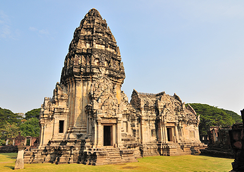
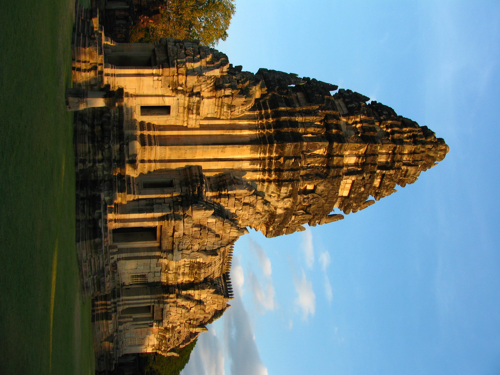
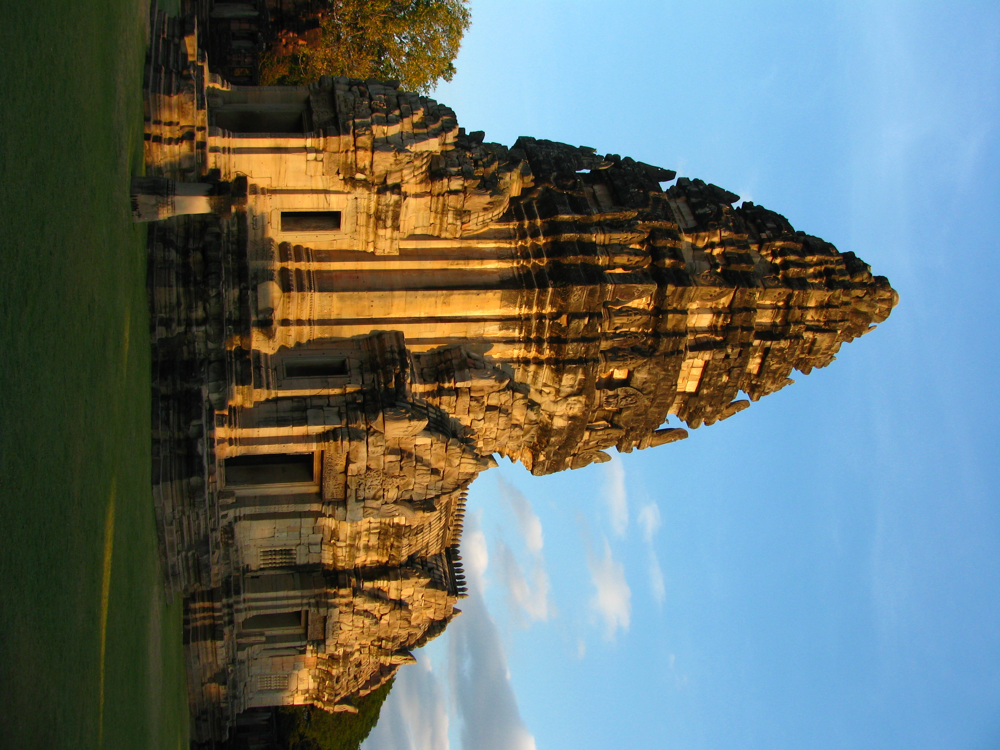
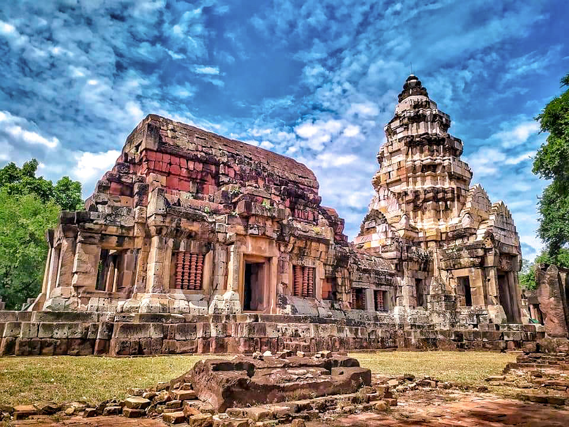
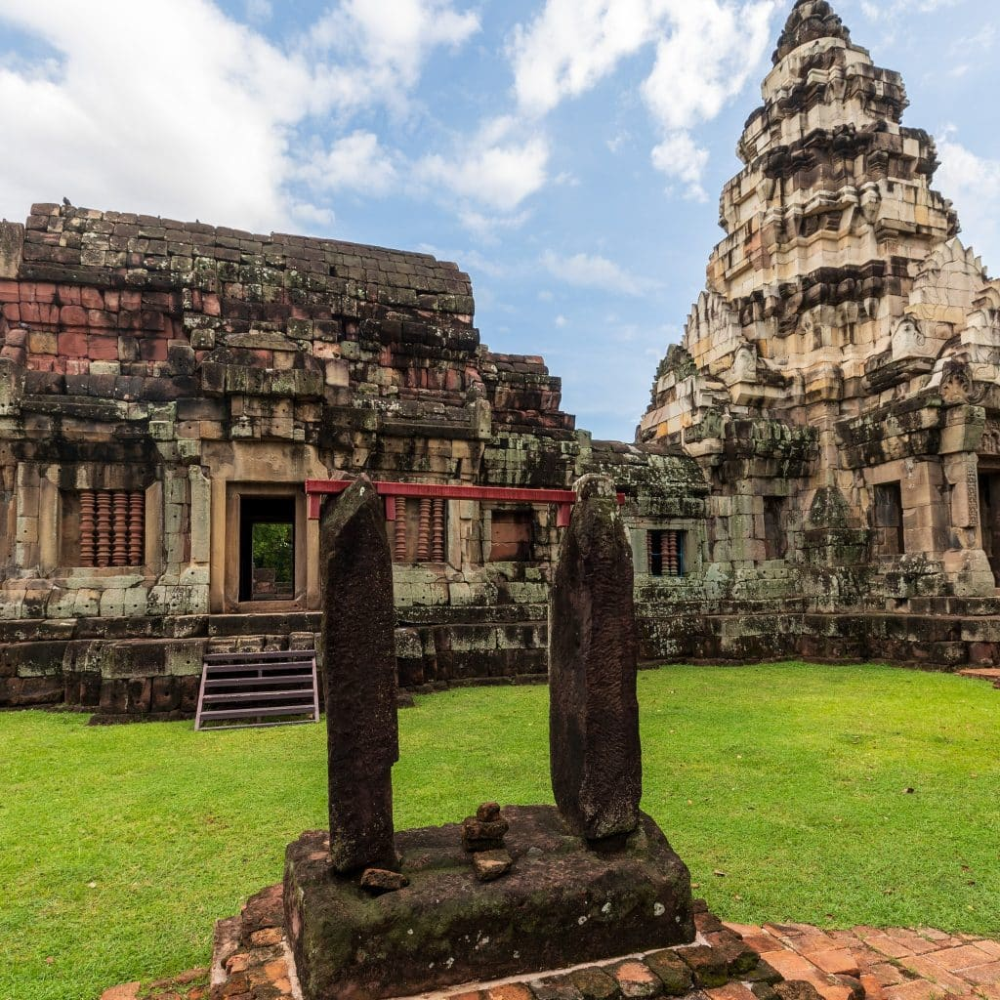
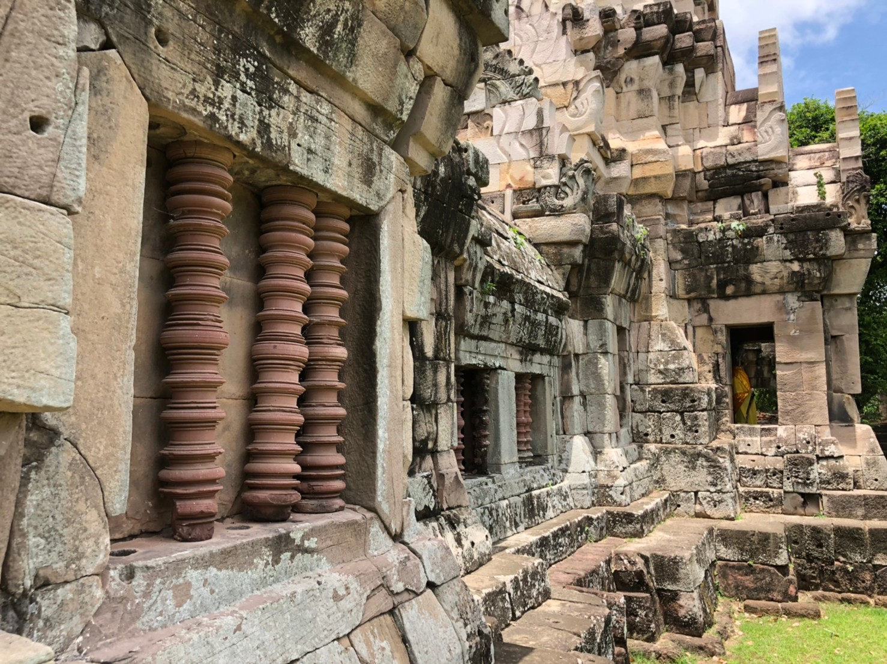
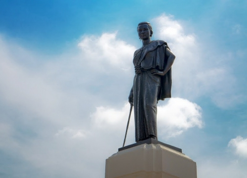
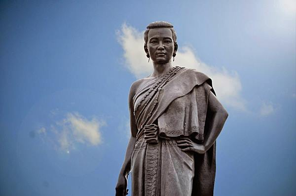
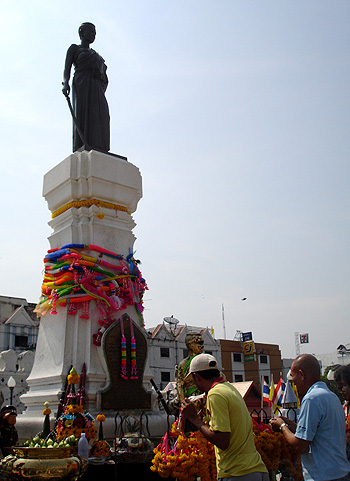

1.อุทยานประวัติศาสตร์พิมาย
เป็นปราสาทหินที่มีขนาดใหญ่ที่สุดในประเทศไทย ซึ่งอยู่ภายใต้การดูแลของกรมศิลปากร กระทรวงวัฒนธรรม
ตั้งอยู่ในอำเภอพิมาย จังหวัดนครราชสีมา เริ่มสร้างขึ้นเมื่อราวพุทธศตวรรษที่ 16 เพื่อใช้เป็นเทวสถานของศาสนาพราหมณ์ และเปลี่ยนเป็นพุทธศาสนานิกายมหายาน ในเวลาต่อมา

 

2.ปราสาทหินพนมวัน
เป็นโบราณสถานสถาปัตยกรรมในคติความเชื่อของเขมรโบราณ เป็นปราสาทหินที่มีขนาดใหญ่เป็นอันดับ 5 ของประเทศไทย ตั้งอยู่ที่บ้านมะค่า
ตำบลบ้านโพธิ์ ถนนสายโคราช-ขอนแก่น อำเภอเมืองนครราชสีมา จังหวัดนครราชสีมา สันนิษฐานว่า เดิมปราสาทหินพนมวันก่อสร้างด้วยอิฐในราวพุทธศตวรรษที่ 15 ต่อมาในราวพุทธศตวรรษที่ 18-19 จึงได้สร้างอาคารหินซ้อนทับลงไป มีลักษณะคล้ายครึงกับปราสาทหินพิมายแต่มีขนาดเล็กกว่า



3.อนุสาวรีย์ท้าวสุรนารี
อนุสาวรีย์ท้าวสุรนารี สร้างขึ้นเมื่อ พ.ศ. 2477 เพื่อเป็นอนุสรณ์รำลึกถึงวีรกรรมอันยิ่งใหญ่ของท้าวสุรนารี หรือ "ย่าโม" วีรสตรีไทยผู้อยู่ในหัวใจ
ของชาวโคราชทุกคน และถือเป็นอนุสาวรีย์ที่ยกย่องความดีของวีรสตรีสามัญชนคนแรกของประเทศ ย่าโมเปรียบเป็นดั่งสัญลักษณ์ของชาวโคราชจึงเป็นที่มาของอีกชื่อที่เรียกขานจังหวัดนครราชสีมาว่า "เมืองย่าโม" นั่นเอง ทุกปีในวันที่ 23 มีนาคม ถึงวันที่ 3 เมษายน จะมีการจัดงานวันฉลองชัยชนะของท้าวสุรนารี ณ บริเวณหน้าศาลากลางจังหวัด นักท่องเที่ยวสามารถเดินทางมาร่วมงานอันยิ่งใหญ่ได้


